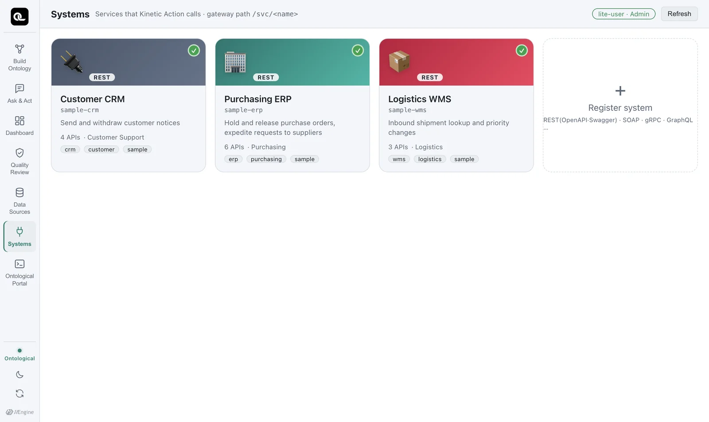
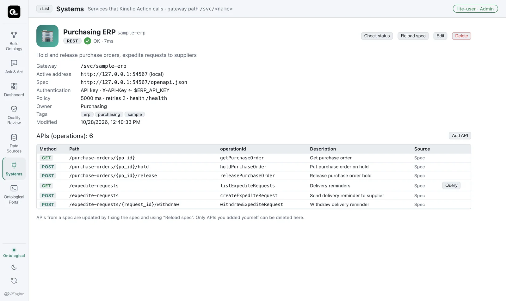

Register the business systems (microservices) that actions call. Data is read from data sources, and work is carried out through the APIs of registered systems. This chapter covers OpenAPI specs, authentication and connection tests.
Why register systems separately?#
The data fabric only reads sources (Chapter 6). Putting a purchase order on hold or raising a shipment's priority must be done by the business system that owns that data. That way the system's business rules (validation, approval, history) are respected.
So actions in Ontological Studio don't write to databases directly; they call the APIs of registered systems. This chapter shows how to register those APIs.
The Systems screen#
Open the Systems card on the home screen. Three sample systems are already registered.

| System | What it does (operationId) | Authentication |
|---|---|---|
sample-erp Purchasing ERP |
Hold and release purchase orders (holdPurchaseOrder, releasePurchaseOrder), send and withdraw expedite requests to suppliers (createExpediteRequest, withdrawExpediteRequest) |
API key (X-API-Key header) |
sample-wms Logistics WMS |
Look up shipments, change priority (setShipmentPriority) |
Basic authentication |
sample-crm Customer CRM |
Send and withdraw customer notices (createNotice, withdrawNotice) |
Bearer token |
Just like in a real company, each system uses a different authentication method. Each system changes only its own schema in the sample business database (erp for the ERP, wms for the WMS).
A closer look at one system#
Click the Purchasing ERP card.

| Item | Meaning |
|---|---|
| Gateway | The name the action executor uses to call this system (/svc/sample-erp) |
| Active address | The actual service address |
| Spec | The URL of the OpenAPI document. The list of APIs is read from here. |
| Authentication | API key · X-API-Key ← $ERP_API_KEY — secret values are not stored in the registration; only the environment variable name is kept. Only the executor holds the value, and it attaches it at the moment of the call. |
| Policy | Timeout 5000 ms, 2 retries, health check path /health (if left empty, the active URL itself is checked) |
| APIs (operations) | The APIs read from the spec: method, path, operationId and description |
Use Check status to see the current connection status, and Reload spec to fetch the spec again after it changes. If an API is missing from the spec, you can enter its method and path yourself with Add API.
Registering a new system#
Click ＋ Register system in the system list. You go through steps, just as when you register a data source.
- Basics — name (lowercase letters, digits and hyphens), display name, owning team, contact, tags, icon.
- Spec — drag in an OpenAPI (Swagger) file or enter the spec URL. The list of APIs you can call is read right away. Non-REST systems (SOAP, gRPC, GraphQL) can be registered too, but they are marked as not usable in actions until an execution adapter is added.
- Authentication — choose API key, Basic, Bearer, OAuth client credentials or login token, and enter the name of the environment variable that holds the secret value.
- Test connection — before saving, the spec is read and the health check is called. If it passes, save. If the system has no health check path, leave the path empty. As long as the server responds (anything other than a 5xx), it counts as connected; if the path you entered returns 404 or 405, you see Connected · (warning) with an orange
~mark, telling you to check the path.
Practice with a public API
If you don't have a company system, you can practice with a public API. For example, if you register Swagger Petstore (https://petstore3.swagger.io/api/v3/openapi.json), 19 APIs are read from the spec and the connection test passes. Enter https://petstore3.swagger.io/api/v3 as the environment's active URL, and leave the health check path empty because Petstore has no /health. Its data is shared by everyone, so it isn't a good target system for building actions — use it only to practice registering and browsing.
Where do the secret values go?
Only a name such as $ERP_API_KEY is kept in the registration. The real secret values of the sample systems are generated at random during installation, stored in secrets.json in the data folder, and passed to the executor only as environment variables. For systems you register yourself, write the secret values in studio.env, as in ERP_API_KEY=....
Check yourself
- Open the Logistics WMS system and find the method and path of the API that changes priority.
- What authentication method does the Customer CRM use, and where does the secret value appear in its registration?
- Give two reasons why an action calls an API instead of running
UPDATEdirectly on the ERP database.
Show answers
POST /shipments/{shipment_no}/priority(operationIdsetShipmentPriority).- Bearer token. The secret value itself never appears; you see only the environment variable name.
- ⓐ To respect the business system's rules, such as validation, approval and history. ⓑ Because authority and responsibility lie with that system (who changed what, and when, is kept in that system's own records). Also, ⓒ the API stays the same even if the system's internal structure (its tables) changes, so actions break less often.